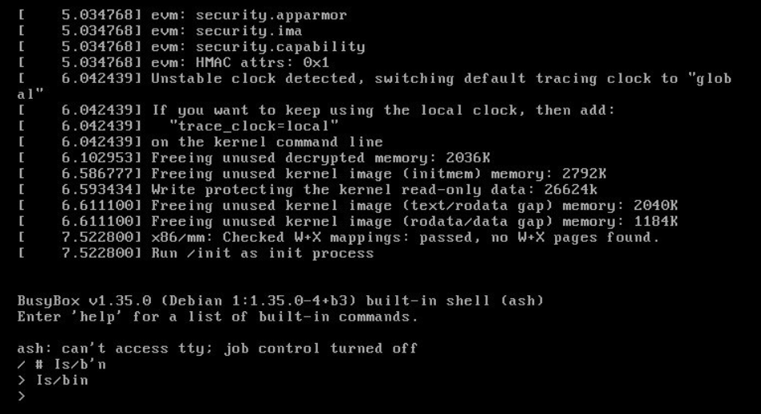

Bu bölümde Linux çekirdeği kullanarak çalışan temel bir Linux sistemi oluşturacağız. Amacımız, dağıtım geliştirme sürecinde bir başlangıç noktası hazırlamak. Sistemi hazırlamak için kernel, initrd.img, grub.cfg olması yeterlidir.
Bu sistemi hazırlarken debian üzerinde kurulu paketlere ihtiyacımız var. Bunlar;
- busybox-static:
BusyBox temel linux komutlarını içerisinde barındıran bir uygulamadır.
- grub-mkrescue:
Bir dizini ISO dosyasına dönüştüren araç.
- qemu-system-x86:
ISO dosyasını test edebileceğimiz sanal bir makine uygulaması.
Debian tabanlı bir sistemde bu uygulamaları şu komutla yükleyebilirsiniz:
# Paketleri kuralım
sudo apt install busybox-static qemu-system-x86 qemu-system-gui grub-pc-bin grub-efi-amd64-bin grub-common xorriso mtools -y
Adım Adım Hazırlama¶
1. Çalışma Dizini Hazırlama
İlk olarak sistem dosyalarını barındıracak bir dizin oluşturalım:
mkdir -p $HOME/temellinux/rootfs
cd $HOME/temellinux/rootfs
2. BusyBox’u Kopyalama
BusyBox ikili dosyasını kök dosya sistemine kopyalayın:
cp /bin/busybox ./busybox
3. `init` Betiğini Oluşturma
Sistem açıldığında kernel’in çalıştıracağı init betiğini oluşturun:
nano init
İçerik:
#!/busybox sh
PATH=/bin
/busybox --install -s /bin
exec /bin/sh
Dosyayı kaydedip çıkın, ardından çalıştırılabilir hale getirin:
chmod +x init
4. initrd.img Dosyasını Paketleme
Tüm kök dosya sistemi içeriğini initramfs imajına dönüştürün:
find . | cpio -H newc -o > ../initrd.img
gzip -9 ../initrd.img
5. GRUB Yapılandırmasını Hazırlama
GRUB’un boot edebilmesi için gerekli dosya yapısını oluşturun:
mkdir -p $HOME/temellinux/iso/boot/grub
nano $HOME/temellinux/iso/boot/grub/grub.cfg
grub.cfg İçerik:
set timeout=5
set default=0
menuentry "Temel Linux" {
linux /boot/vmlinuz
initrd /boot/initrd.img
}
6. Kernel ve initrd’yi iso dizinine kopyalayın:
cp /boot/vmlinuz-$(uname -r) $HOME/temellinux/iso/boot/vmlinuz
cp $HOME/temellinux/initrd.img $HOME/temellinux/iso/boot/initrd.img
Bu aşamaya geldiyseniz aşağıdaki gibi bir dizin yapısı oluşmuş olmalı:
$HOME/temellinux/iso/boot/grub/grub.cfg
$HOME/temellinux/iso/boot/initrd.img
$HOME/temellinux/iso/boot/vmlinuz
7. ISO Dosyası Oluşturma
Boot edilebilir ISO dosyasını oluşturun:
grub-mkrescue -o $HOME/temellinux/temellinux.iso $HOME/temellinux/iso
8. Sistemi Test Etme
QEMU ile sistemi test edin:
qemu-system-x86_64 -cdrom $HOME/temellinux/temellinux.iso -m 1024M
Başarılı bir şekilde açılırsa, BusyBox’un sağladığı temel komutları çalıştırabilirsiniz.
Sonuç¶
Bu adımlar sonunda, yalnızca BusyBox ve Kernel ile çalışan basit bir Linux sistemi elde etmiş olacaksınız. Bu temel sistem, daha gelişmiş bir dağıtım hazırlamak için rehberlik edecektir.


Kaynaklar:
- https://www.subrat.info/build-kernel-and-userspace/ - 08/07/2025
- https://medium.com/@chienhaotan/compiling-and-running-a-minimal-kernel-with-busybox-bfc45a991017 - 08/07/2025
- https://wiki.archlinux.org/title/GRUB_(T%C3%BCrk%C3%A7e) - 08/07/2025
- https://gist.github.com/bluedragon1221/a58b0e1ed4492b44aa530f4db0ffef85 - 09/07/2025